遥操作合成数据生成#
在 Isaac Sim 中，遥操作允许您使用 VR 头显和控制器控制机器人，将产生的动作捕获为演示数据，并回放这些数据以生成用于机器人学习的合成数据集。

|

|
本教程涵盖 isaacsim.replicator.teleop 和 isaacsim.replicator.teleop.ui 扩展。运行时通过 VR 控制器驱动机械臂、夹爪、浮动末端执行器和移动底盘。UI 在 Teleop 窗口中以可折叠面板的形式展示该运行时。isaacsim.replicator.episode_recorder 扩展负责处理录制、回放以及离线合成数据生成。
学习目标#
完成本教程后，您将能够：
通过 Isaac Teleop 运行时将 Isaac Sim 连接到支持 CloudXR 的 VR 头显。
在 Teleop 窗口中配置 Floating、IK、Grasp 和 Locomotion 控制器。
通过 VR 控制器操作机器人，或在调试模式下通过屏幕上的标记和滑块进行操作。
将完整的遥操作设置保存为 YAML 配置文件并重新加载。
使用 Episode Recorder 将遥操作片段录制为 HDF5 格式。
区分 HDF5 世界状态回放与 MCAP 遥操作输入回放，并选择合适的工作流程。
通过 Replicator 写入器回放录制的片段，以生成合成数据集。
入门指南#
先决条件#
已构建且可启动的 Isaac Sim。
从 PyPI 安装的 Isaac Teleop：
python -m pip install "isaacteleop[cloudxr,retargeters]~=1.3.0"
与主机位于同一网络中的兼容 CloudXR 的 VR 头显。本教程中的控制器按钮映射针对 Meta Quest 3；其他头显可能通过相同的 OpenXR 动作呈现不同的按钮语义。
包含机器人的 stage。在学习工作流时，请使用内置场景 stage之一（例如
teleop_scenario_floating_xarm_dex3.usd）。
注意
调试模式使用可拖动的 USD 标记和屏幕滑块来替代 VR 输入。它不需要头显、CloudXR 或 Isaac Teleop 包。MCAP 输入回放仍然需要 Isaac Teleop 包，但不需要头显或 CloudXR。使用这两种模式中的任何一种时，请跳过下面的 CloudXR 步骤。请参阅无 VR 操作（调试模式）和MCAP 遥操作输入回放。
启动 CloudXR 并连接头显#
在单独的终端中启动 CloudXR 并保持其运行：
python -m isaacteleop.cloudxr --accept-eula
在 Isaac Teleop Web Client 上配对头显。
可选：在从终端启动 Isaac Sim 之前，先加载 env 文件（详情）：
source ~/.cloudxr/run/cloudxr.env
运行模式#
Teleop 运行时支持两种 Isaac Sim 启动配置。这两种配置均加载 Teleop UI，并支持本教程中介绍的所有控制器。CloudXR 必须在单独的终端中保持运行。加载 cloudxr.env 仅配置进程环境；它不会启动 CloudXR 运行时。
2D 显示器（仅控制器跟踪） — 桌面视口在平面屏幕上渲染场景。Isaac Teleop 创建无头 OpenXR 会话，以提供头显和控制器跟踪。无需 Kit XR，且 Teleop 不需要 XR 配置文件锚点。在平面显示器上深度线索较难识别；请使用 Visual Cues 面板显示从每个控制器到参考平面的投影线。这是默认模式，无需特殊应用：
./isaac-sim.sh
VR 头显（立体渲染） — 启动 XR VR 体验应用 (
isaacsim.exp.base.xr.vr.kit)。Kit 拥有 OpenXR 会话，并且isaacsim.kit.xr.teleop.bridge扩展将其句柄与 Isaac Teleop DeviceIO 共享。头显接收立体渲染的视口以提供第一人称 3D 视图，并暴露一个头显内的 Play / Stop UI，其功能等同于桌面时间轴按钮。桌面窗口仍可用于 UI 交互：./isaac-sim.xr.vr.sh
OpenXR 会话所有权与锚点组合#
在 2D 显示器模式下，Isaac Teleop 拥有其独立的 OpenXR 会话。在 VR 头显应用中，Kit XR 拥有该会话并自动与 Isaac Teleop 共享 — 在两种模式之间切换无需额外配置。
两种模式都驱动相同的场景变换，用于机器人目标、帧标记以及（在 VR 头显应用中）Kit XR 的立体渲染。请在通过 Session > XR Anchor > Custom Anchor 选择的持久化场景 Xform 上设置物理空间与舞台之间的任意偏航角校正，而不是在 /Teleop/Markers 下的运行时标记层级上设置。
提示
如果场景中的 VR 控制器方向与物理控制器不匹配，首先确认 Coordinate Frame 设置为 Isaac Sim (Z-up)。若仍存在不匹配，则需要进行场景偏航（yaw）校准：创建一个持久化的 Xform（例如 /World/TeleopAnchorCorrection），在其中设置所需的偏航值，并通过 Session > XR Anchor > Custom Anchor 选择它。请勿在 /Teleop/Markers/TrackingOrigin 下方添加校正，因为 Teleop 会重新创建该运行时层级结构。请勿将 Kit 的 VR Profile 直接指向校正 prim；Teleop 会发布生成的 /World/XRAnchor，以保持渲染、标记和机器人目标的注册状态。
打开 Teleop 窗口#
扩展程序会自动加载。从 Tools > Replicator > Teleop 打开 Teleop 窗口：
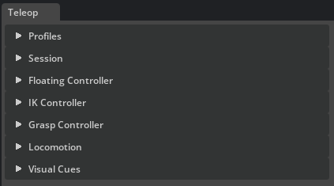
在 CloudXR 运行时运行且头显已连接的情况下，点击 Session 面板中的 Connect 以启动遥操作会话。
快速入门#
将内置场景阶段之一与其匹配的配置文件配对，连接，然后按 Play。配置文件会将每个控制器解析到阶段中，因此无需手动设置。
打开 内置场景阶段 之一，例如
teleop_scenario_floating_xarm_dex3.usd。在 Teleop 窗口的 Profiles 面板中，选择匹配的配置文件（
floating_xarm_dex3.yaml）并点击 Load。每个控制器都会解析到阶段中，其 Enable 按钮将被激活。展开 Session 并点击 Connect。如果没有头显，请展开 Session > Debug 并勾选 Debug Mode。
在时间轴上按 Play。
移动 VR 控制器（或在调试模式下拖动屏幕上的标记）来操作机器人。
配置文件仅启用其场景所需的控制器：
Floating Controller — 将自由刚体夹爪或末端执行器跟踪至 VR 控制器位姿。
IK Controller — 通过逆运动学驱动关节臂，使其末端执行器跟踪 VR 控制器。
Grasp Controller — 通过单个扳机驱动传统夹爪，或将扳机和挤压动作重定向至多指手。
Locomotion — 通过摇杆移动机器人基座或 VR 原点。
例如，floating_xarm_dex3.yaml 启用了由扳机驱动的 Floating、Grasp 和 Locomotion 控制器。选择 floating_xarm_dex3_retargeted.yaml 并配合相同的 stage，即可通过 trigger 和 squeeze 独立驱动右侧 Dex3 的食指、中指和拇指关节。IK profiles 启用的是 IK 而非 Floating。有关包含录制和回放的详细分步说明，请参阅 工作流演练。
概述#
该扩展分为两个层：
isaacsim.replicator.teleop— 处理 VR 输入、帧标记以及四个控制器（Floating、IK、Grasp、Locomotion）的运行时，所有控制器均由TeleopManager管理。isaacsim.replicator.teleop.ui— Teleop 窗口，包含用于 profiles、会话设置、控制器配置、locomotion 和视觉辅助的可折叠面板。
每个控制器都遵循相同的三步生命周期：
Apply 验证 prim path 并准备控制器资源。
Enable 为下一次 Play 武装控制器。
Clear 拆除资源，但保留 prim path 以便快速重新配置。
控制器仅在时间轴播放时处于活动状态，并在 Stop 时自动停用。增益、旋转偏移和速度滑块在 Play 期间可实时编辑，并在会话之间持久保存。每个面板的完整状态可以从 Profiles 面板保存到 YAML profile 中。
Episode Recorder 窗口负责处理录制和回放。当 TeleopManager 处于活动状态时，从该窗口打开的会话除了捕获 UI 中选定的 articulation、rigid-body 和 Xform 通道外，还会自动捕获 teleop 控制器、aim-pose 和 head-pose 通道。录制的 HDF5 文件为离线 合成数据流水线 提供数据。对于脚本化工作流，build_teleop_recorder 会返回一个预配置了 teleop 和场景 recordables 的等效录制器。
存在两条独立的回放路径。Episode Recorder 在不步进物理引擎的情况下回放 HDF5 世界状态；这是用于检查和合成数据生成的可复现路径。Teleop 运行时也可以读取 Isaac Teleop MCAP 作为其输入源，并再次运行配置的控制器。MCAP 输入回放旨在用于输入流水线测试和重新仿真，而非位精确的轨迹复现。
UI 窗口概览#
Teleop 窗口包含可折叠的面板，下文将从上到下依次描述。独立的 Episode Recorder 窗口负责处理录制和回放；请参阅 录制和回放。
配置文件#
Profiles 面板将所有其他面板的完整状态保存并恢复为单个 YAML 文件。
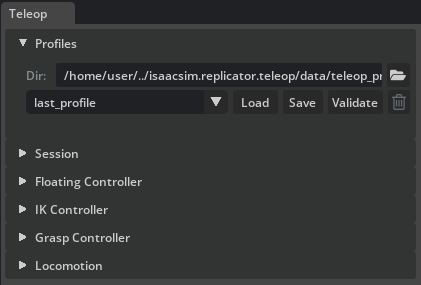
Dir — teleop profile 文件的工作目录。默认为扩展程序自带的内置 profiles 目录。点击文件夹图标可浏览并选择自定义目录。
Profile dropdown — 列出工作目录中找到的所有
.yaml文件。Load — 读取选定的 profile 并将其应用到所有面板。如果 stage 中包含所引用的 prims，控制器将立即解析；否则将填充 UI 字段，并报告未解析的路径。
Save — 打开内联 Name 字段和 Confirm 按钮。输入文件名（不含
.yaml）并点击 Confirm，将当前面板状态写入磁盘。如果同名文件已存在，Overwrite profile 对话框将请求确认；点击 Overwrite 替换现有文件，或点击 Cancel 保留现有文件。Validate — 根据当前 stage 检查所有面板设置，并在状态栏中报告错误和警告的数量。对于重定向抓取（retargeted grasp），验证将检查重定向器类型，并通过抓取配置将每个语义别名解析为可控的 USD joint。详细问题将打印到控制台。
Delete（垃圾桶图标）— 从磁盘永久删除选定的 profile 文件。
会话#
Session 面板管理 VR 连接、帧标记、XR Anchor（自定义锚点 prim 以及头显偏移和旋转）以及调试控件。
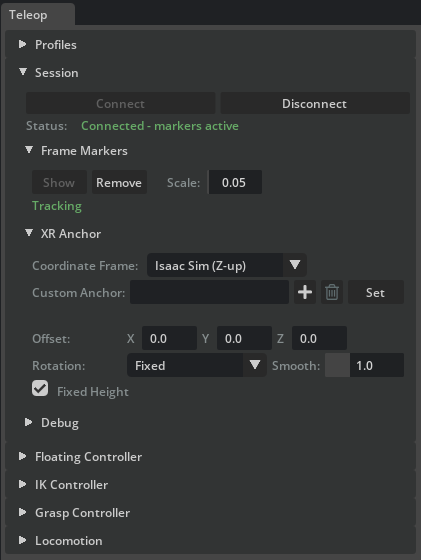
连接#
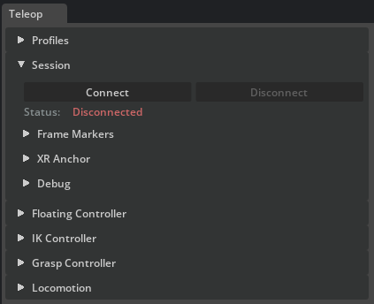
Connect / Disconnect — 建立或断开 OpenXR 远程操作会话。需要在单独的终端中运行 CloudXR。
Status — 显示当前连接状态：红色（Disconnected）、绿色（Connected - markers active）或黄色（No data 等中间状态）。
帧标记#
Frame Markers 子部分在 /Teleop/Markers/TrackingOrigin 下以四个帧轴 prim 的形式显示实时 VR 姿态 — 即原点、Left、Right 和 Head。在点击 Connect 或启用 Debug Mode 时会自动创建标记；您也可以在此处手动创建或删除它们。
Show — 创建四个帧轴标记并开始向其流式传输 VR 姿态。
Remove — 删除标记并停止跟踪。
Scale — 调整所有标记的视觉轴长度。
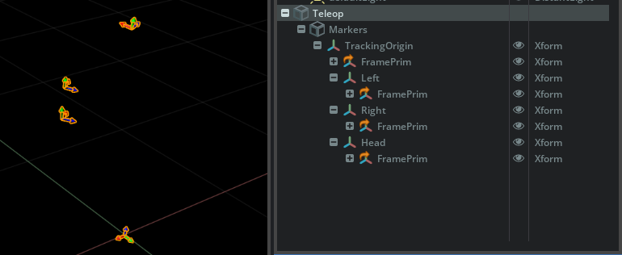
XR 锚点#
XR Anchor 子面板将帧标记和遥操作姿态跟踪保持在同一个已解析的场景变换上，并在启用立体渲染时将该变换发布到 Kit XR。Custom Anchor 选择用作参考的只读场景 prim，供遥操作姿态合成、XR 渲染和移动功能使用。偏移、旋转、平滑和固定高度控件仅对该共享变换应用一次，而 Coordinate Frame 会在遥操作应用之前转换传入的头显和控制器姿态。命名方式与 Kit 的 VR Profile 菜单一致，其中渲染锚点位于 Navigation Settings > Physical World USD Anchor > Custom USD Anchor 下。
Coordinate Frame — 选择如何转换传入的 VR 姿态：
Isaac Sim (Z-up) — 应用从 Y-up 到 Z-up 的旋转，使姿态符合 Isaac Sim 舞台约定（默认值）。
Raw (no conversion) — 原样传递姿态，不进行转换。
Custom Anchor — VR 头显、控制器、标记点和机器人目标所锚定的场景 prim。点击 Set 以验证路径并开始每帧实时跟随该 prim 的世界变换。Teleop 读取此 prim 时不会重写其 xform 堆栈。自定义路径激活后，同一行的按钮将变为 Clear。Clear 会恢复为
/Teleop/Markers/下的内置原点标记；输入的路径仍保留在字段中。若要重新定位活动锚点，请点击 Clear，如有需要则编辑路径，然后再次点击 Set。使用行内的垃圾桶图标可清除字段文本。在保留的/Teleop/Markers/命名空间下的路径，在点击 Set 时将回退到内置原点。Offset — 共享跟踪原点的位置偏移量（单位为米）（包含 X、Y 和 Z 字段的一行）。若未设置 Custom Anchor，此偏移量将把内置原点放置在绝对世界位置。若设置了 Custom Anchor，则偏移量以解析后的锚点的局部轴表示。
Rotation — 共享跟踪原点的偏航（yaw）如何使用 Custom Anchor prim：
Fixed — 捕获并保持 prim 的初始绝对偏航。这保留了预先设定的对齐校正，同时忽略 prim 后续的旋转。
Follow Prim — 跟随 prim 当前的绝对偏航；去除滚转（roll）和俯仰（pitch）以避免 VR 不适感。
Follow (Smoothed) — 通过 slerp 阻尼跟随当前偏航。
Smooth — slerp 时间常数（单位为秒），仅在 Smoothed 模式下使用。值越低，跟踪响应越灵敏；值越高，运动越平滑。
Fixed Height — 将最终共享锚点的 Z 轴锁定为初始值，防止垂直方向的上下浮动，同时保持渲染的控制器、框架标记和机器人目标对齐。
注意
在立体 VR 体验中，Teleop 窗口会临时接管 Kit 的 XR 配置文件锚点设置，位于 VR Profile > Navigation Settings > Physical World USD Anchor。在连接之前，它使用 scene origin 模式。点击 Connect 时，它将 Kit 切换为 custom anchor 模式并指向 /World/XRAnchor，同时验证 Kit 是否接受了这两项设置。生成的 prim 仅存在于匿名会话层中，并在 Disconnect 时被移除。因此，在连接之前该路径必须为空；Teleop 拒绝覆盖位于 /World/XRAnchor 的用户拥有的 prim。在 Disconnect 时，Kit 返回 scene origin 模式，关闭 Teleop 窗口会恢复打开它之前激活的 XR 设置。2D 监视器模式不需要 Kit XR 或这些配置文件设置。
通过 Session > XR Anchor > Custom Anchor 配置场景参考，而不是直接将 Kit 的 VR Profile 指向场景 prim，也不是在 /Teleop/Markers 下编写校正（该扩展会在每次会话时重新创建该层级结构）。有关持久化 Xform 工作流，请参阅 场景偏航校准提示。当 Rotation = Fixed 时，初始校正保持固定，并一致地应用于 Kit XR、标记和遥操作目标。
Coordinate Frame 转换传入的 OpenXR 姿态；它不会选择或旋转 Kit 的 profile anchor。Kit 的 profile 级别 Adjust for User Height 设置位于 Navigation Settings 下，也是独立的——它在进入场景时移动相机，而 Fixed Height 在遥操作会话期间将共享解析变换的 Z 位置锁定为第一帧的值。
调试#
Debug 模式使用可拖动的 USD 标记和屏幕滑块替代 VR 控制器输入，因此无需 VR 硬件即可测试每个控制器。有关逐步操作指南，请参阅 debug mode。


Debug Mode 复选框——启用合成姿态和滑块输入。与实时 VR 连接互斥：请先断开连接，或在连接前禁用 debug 模式。
L Grasp / R Grasp——滑块（0–1），用于模拟 VR 扳机挤压。直接作为
trigger_value输入到 Grasp Controller。L Squeeze / R Squeeze——滑块（0–1），用于模拟控制器握把模拟值。Retargeted grasp 独立于扳机使用此值。
Slide X / Slide Y ——滑块（-1 至 1），用于模拟左摇杆，实现 Locomotion 的横向和前后滑动。
Turn ——滑块（-1 至 1），用于模拟右摇杆，实现 Locomotion 的偏航旋转。
Up / Down ——按住按钮，用于模拟右侧面部按钮，实现垂直运动。
Carry Origin ——复选框，用于切换 Carry Tracking Space，使 locomotion 将 Session 跟踪空间基元与机器人基座一起移动。
Write Backend ——覆盖用于所有 teleop 写入的全局
XformPrim后端。选项：USD（普通属性写入）、USD-RT（Fabric 层级结构）、Fabric（最快路径，需要 Fabric Scene Delegate）。
视觉提示#
Visual Cues 面板为 2D 遥操作添加垂直引导线。每一侧渲染一个垂直圆柱体，从跟踪的世界位置向下延伸至可配置的 Reference Z。该圆柱体默认使用不透明度为 0.5 的自发光预览材质，并标记为不投射阴影；它不会向场景添加光源。这些提示仅作为视口辅助工具：它们位于 /Teleop/VisualCues/ 下的匿名会话子层中，不会随根舞台保存，也不会被 Episode Recorder 默认的 /World 发现机制自动包含。如果显式选择 /Teleop 或提示基元，它们仍可被录制。

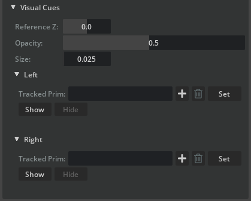
全局控件：
Reference Z ——提示圆柱体结束的世界 Z 高度（默认
0.0）。Opacity ——提示几何体的透明度。
Size — 用于推导提示圆柱体厚度的统一缩放比例。
每一侧（Left / Right）都有其独立的子面板：
Tracked Prim — 可选的 prim 覆盖设置。留空以自动链接到 VR 控制器输入（跟踪空间偏移后的 OpenXR 瞄准姿态）。在调试模式下，自动链接将改为跟随 Left/Right 调试标记的世界姿态。点击 Set 以应用手动指定的 Xform prim 路径；清空该字段并再次点击 Set 以恢复自动链接。
Show / Hide — 创建或移除该侧的掉落线。不需要帧标记：只要控制器或调试输入可用（或设置了 Tracked Prim 覆盖），即使 Frame Markers 隐藏，提示也可以可见。
掉落线不驱动机器人运动。它们仅反映操作员指向的位置。
浮动控制器#

Floating Controller 驱动一个自由刚体，使其通过基于速度的 PD 控制来跟踪 VR 控制器姿态。将其用于不属于运动链的末端执行器或夹爪。每一侧（Left / Right）都有其独立的折叠子面板。

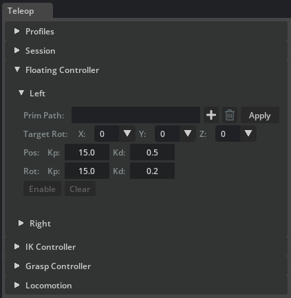
目标 prim 必须是刚体。若要使用 Floating Controller 控制关节夹爪，请将关节根关节附加到刚体上，并将 Floating Controller 指向该刚体。夹爪的关节结构将作为子级随之移动，而 Grasp Controller 则独立驱动其手指关节。
Prim Path — 要驱动的刚体 prim。点击 + 按钮从视口中选取 prim，或粘贴路径。点击 Apply 进行验证。配置完成后，路径字段、+ 按钮和删除按钮将被锁定；点击 Clear 可重新配置。
Target Rot（包含 X、Y 和 Z 组合的一行）— 以 90 度为增量的各轴局部旋转偏移量（-180、-90、0、+90、+180）。不同的夹爪和末端执行器具有不同的局部坐标系约定；这些偏移量用于对齐受控刚体，使其前向轴与 VR 控制器的指向方向一致。例如，如果某个夹爪的局部 Z 轴指向侧面而非前方，可以通过 90 度的 Y 轴偏移进行校正。在 Play 期间可调整，并保存在遥操作配置文件中。
Pos Kp / Kd — 位置比例和微分增益。较高的 Kp 使刚体更快地吸附到目标位置；Kd 用于抑制振荡。
Rot Kp / Kd — 姿态比例和微分增益。原理与位置增益相同，应用于旋转跟踪。
Enable / Disable — 为下一次 Play 启用或禁用控制器。状态转换：Configured → Standby → Active（在 Play 时）。
Clear — 销毁控制器资源，但保留 prim 路径。
IK 控制器#

IK Controller 通过逆运动学驱动关节机器人手臂，使其末端执行器跟踪 VR 控制器的姿态。每一侧（Left / Right）都有各自可折叠的子面板。

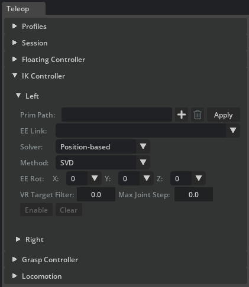
目标 prim 必须是一个 articulation。IK 求解器作用于从 articulation 根节点到所选末端执行器链接的关节链。对于典型设置——例如带有夹爪的 UR3e 手臂——请选择腕部链接作为末端执行器，以便 IK 仅求解手臂关节。夹爪关节则由 Grasp Controller 单独驱动。
关节结构与末端执行器#
Prim Path — articulation 根 prim。点击 Apply 进行验证。成功后，EE Link 下拉菜单将填充运动链中的所有 body 链接。
EE Link — 选择链中哪个链接作为 IK 目标。选择最后一个手臂链接（例如腕部）以将夹爪关节排除在 IK 求解之外。默认选择链中的最后一个链接。
Clear — 销毁求解器和 articulation 资源；保留 prim 路径以便快速重新配置。
求解器选择#
Solver 下拉菜单 — 选择 IK 后端。每个求解器都可以在 Play 期间热切换，而无需停止时间轴：
Solver
Description
Position-based
单步雅可比微分 IK。支持可配置的 Method 下拉菜单。
Velocity-based
速度空间 IK，带有比例 Gain 滑块，用于控制跟踪的激进程度。同样支持 Method 下拉菜单。
Levenberg-Marquardt
每帧进行多次迭代的阻尼最小二乘法。无方法或增益控制。
PINK
基于任务的 QP IK，使用 Pinocchio 后端，具有关节限位强制和姿态正则化功能。提供下文所述的其他调优选项。
Method 下拉菜单 — 仅对 Position-based 和 Velocity-based 求解器可见。选择雅可比矩阵求逆策略：
Damped LS — 最稳定的默认选项；能很好地处理奇异点。
Pseudoinverse — 在条件良好时直接跟踪；在奇异点附近稳定性较差。
Transpose — 计算成本最低的更新方式；可能对增益敏感。
SVD — 鲁棒的奇异值滤波；通常计算量最大。
旋转偏移与调优#
EE Rot（包含 X、Y 和 Z 组合的一行）— 以 90 度为增量的各轴局部旋转偏移（-180、-90、0、+90、+180）。其用途与 Floating Controller 的 Target Rot 相同：对齐 IK 目标，使机器人的工具尖端或夹爪朝向与 VR 控制器相同的方向。可在运行时调整并保存在配置文件中。
VR Target Filter — 对传入的 VR 目标姿态应用指数移动平均 (EMA) 低通滤波器。范围 0.0–0.95。数值越高，抖动越少，但延迟越大。默认值为 0.0（无滤波）。
Max Joint Step — 对每个模拟步骤中最大关节角度变化量（弧度）的安全钳制。防止关节突然跳变，但不作为真正的速度限制。默认值为 0.0（禁用）。
Gain —（仅适用于基于速度的求解器）比例增益，控制末端执行器追踪 VR 目标的激进程度。值为 1–5 时提供平滑保守的追踪；10–20 时追踪速度快；超过 30 时可能会产生振荡。
PINK 特定调优#
仅当选择 PINK 求解器时才会显示这些控件：
Task Gain — PINK
FrameTask响应增益。值越高，追踪越激进；值越低，追踪越柔和。Posture — 姿态正则化成本。值越高，机械臂越接近其当前姿态；值越低，末端执行器任务拥有更多自由度。
QP 下拉菜单 — 二次规划求解器后端。用于比较不同后端的求解质量和性能。
LM Damp —
FrameTaskLevenberg-Marquardt 阻尼。值越高，在困难配置下的稳定性越好，但响应速度变慢。
启用与状态#
Enable / Disable — 为下一次 Play 启用或禁用 IK 控制器。在 Play 期间，当目标可达时状态显示为 Active，当 VR 目标离开机械臂工作空间时显示为 Out of reach。当目标返回到可达姿态时，追踪会自动恢复。
抓取控制器#

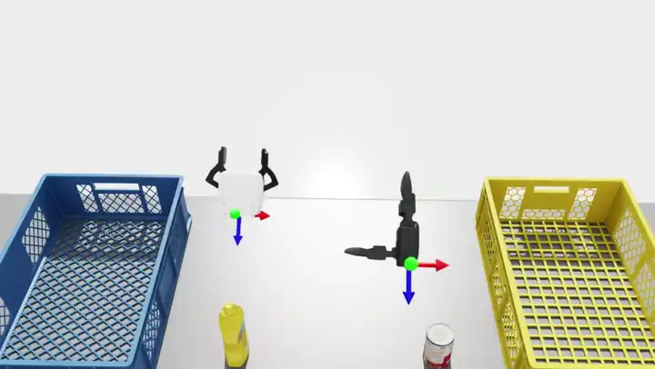
抓取控制器将 VR 扳机的模拟值（0 = 张开，1 = 完全闭合）映射到夹爪关节驱动目标。夹爪类型差异很大——平行夹爪只有一个驱动关节，而多指手可能拥有跨越多个手指的十几个关节——因此该控制器依赖于一个 YAML 配置文件，该文件定义了从线性 0–1 扳机值到每个关节目标位置的映射。每一侧（Left / Right）都有一个独立的、可折叠的子面板，用于独立配置。

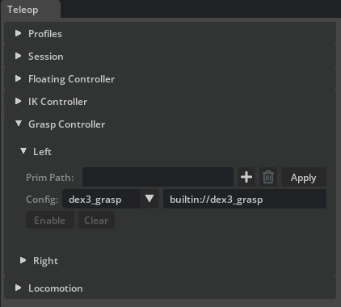
Prim Path — 夹爪关节结构的 prim。点击 Apply 可验证路径并一步加载当前选定的配置。配置完成后，该字段将被锁定；点击 Clear 可重新配置。
Config 下拉菜单 — 选择随扩展程序一起提供的内置抓取配置。选择一个条目会立即更新其旁边的路径字段，并将该侧重置为
Config changed - click Apply，因此在 Enable 变为可用之前，必须再次点击 Apply。Config path field（Config 旁边的可编辑文本字段）— 指向抓取配置 YAML 文件的完整路径或
builtin://URI。在此处输入自定义路径，以使用您自己的配置文件来适配自定义夹爪或抓取样式。编辑此字段后，同样需要再次点击 Apply。Enable / Disable — 启用或禁用此侧的触发器跟踪。
Clear — 销毁抓取资源，同时保留路径以便快速重新配置。
在Play模式下，触发压力从 VR 控制器或L Grasp / R Grasp 调试滑块读取。对于配置中列出的每个关节，控制器根据当前触发值在张开和闭合目标值之间进行线性插值。
重定向的多指抓取#
Teleop 配置文件可以让手部启用 retargeted 抓取驱动。这是控制器输入重定向，而非跟踪的手部骨架重定向：它将两个控制器模拟值扩展为语义化的手指激活。Live OpenXR、调试控件和 MCAP 回放都提供相同的控制器快照，因此执行相同的映射。
支持的 trihand 重定向器计算以下归一化激活值：
语义输出 |
控制器输入 |
激活 |
|---|---|---|
|
触发相对于挤压 |
|
|
触发或挤压中的较强值 |
|
|
触发或挤压中的较强值 |
|
|
触发 |
|
|
挤压 |
|
配置文件的 joint_aliases 将这七个语义输出映射到特定于机器人的 USD 关节名称。选定的抓取配置随后通过该关节的 target_range 转换每个归一化激活值。这使得机器人拓扑结构和限制条件不依赖于重定向器。抓取配置的角度目标以度为单位表示；当关节张量后端需要弧度时，控制器会在内部进行转换。
grasp:
right:
enabled: true
prim_path: /World/Robot/right_hand
config_path: builtin://dex3_grasp
drive_mode: retargeted
retargeter_kind: trihand
joint_aliases:
thumb_rotation: right_hand_thumb_0_joint
thumb_proximal: right_hand_thumb_1_joint
thumb_distal: right_hand_thumb_2_joint
index_proximal: right_hand_index_0_joint
index_distal: right_hand_index_1_joint
middle_proximal: right_hand_middle_0_joint
middle_distal: right_hand_middle_1_joint
对于常规夹爪，请使用 drive_mode: trigger（默认值），其中一个触发器值应驱动所有已配置的关节。选择内置的 floating_xarm_dex3_retargeted.yaml 配置文件并配合 teleop_scenario_floating_xarm_dex3.usd，即可使用现成的示例。其 Dex3 配置有意将 right_hand_thumb_0_joint 保持为 target_range: [0, 0]；拇指旋转别名会被验证并写入，但在另一个抓取配置提供非零范围之前，该关节保持固定。
Validate 会在以下情况下报告可操作的错误：重定向器不受支持、语义别名未知、别名目标在抓取配置中不存在，或者抓取 prim 下方的匹配 USD 关节不可控。在调试模式下，使用 Grasp 和 Squeeze 滑块即可在不依赖 Isaac Teleop、CloudXR 或头显的情况下测试完整的映射。自动化测试还会针对真实的 Dex3 资产，额外执行合成路由、USD DriveAPI 写入、测量的关节运动以及所有七个别名的测试。
配置文件格式#
每个配置文件列出了要驱动的关节、输入范围以及对应的目标范围。旋转关节的目标范围以度为单位的角度；平移关节的目标范围以舞台线性单位表示的距离。编写自定义配置文件以支持您自己的夹爪，或在同一只手上定义替代的抓取样式——例如，在五指手上实现捏合抓取与全掌抓取。
简单夹爪 — xarm_grasp.yaml 映射单个驱动关节：
joints:
- name: "drive_joint"
input_range: [0.0, 1.0]
target_range: [0.0, 48.0]
可选的 drive 映射仅针对匹配的关节覆盖 USD 驱动属性。如果希望直接使用原始资产中的增益，则省略此项。
Script Editor 浮动夹爪示例使用由 GRIPPER_NAME 选定的夹爪。仅更改该常量即可在 "xarm" 和 "dex3" 之间切换；GRIPPERS 侧分配及场景的其余部分保持不变。可编辑常量被显式传递给 run_example_async，因此调用者也可以使用不同的分配、目标旋转、运动容差、随机种子或捕获配置来调用该示例。TARGET_ROTATION_DEGREES = (90, 0, 0) 保持夹爪水平，并将目标 prim 的蓝色轴指向世界坐标系的 +Y 方向；若要指向世界坐标系的 -Y 方向，请在 X 轴上使用 -90 度。该示例将此目标方向与所选 YAML 的 rotation_offset_degrees 组合，将资产帧 tcp.translation 旋转到世界空间，并从每个期望的 TCP 位置中减去该根节点到抓取中心的向量。每个内置定义都在其配置的基础连杆下创建一个命名的 Tcp Xform，因此同一个存储的帧同时驱动运动和相机瞄准。对于 xArm，资产局部 +Z 因此映射到世界 +Y，并将浮动根节点放置在世界 -Y 方向 0.15 m 处，而不是世界 -X 方向。Dex3 的 TCP 在手掌帧中向前 0.08 m 且横向 0.05 m。生成的场景将 TableCube 放置在 /World/Objects 下方，并使用其世界空间边界框在左半部分采样红色立方体，在右半部分采样较高的蓝色立方体。RNG_SEED 使这些放置可重复，并且当桌子尺寸变化时，采样范围会自适应调整。夹爪从桌子前部附近沿世界 -Y 方向开始，其视觉提示延伸至地面。场景稳定后，示例查询立方体姿态，并将生成的 TCP 位置作为显式参数传递给 goto 辅助函数；此查询是唯一的 USD 真实值适配器，可由外部感知系统替代。序列移动到蓝色立方体上方，在打开状态下下降，闭合并提升，移动到红色立方体上方，下降，释放，并将夹爪返回到初始姿态。较少的 PHASE_SAMPLES 值使每次移动更快但不够平滑，而较小的 POSITION_TOLERANCE 更严格且可能导致速度变慢。GRASP_HEIGHT_OFFSET 选择特定于物体的上部抓取带，以便指尖保持在支撑物上方。较宽的红色立方体是蓝色立方体的放置支撑物。SceneCameraTop 位于组合立方体中心上方两米处，并垂直向下看。TCPCameraTop 沿世界 +Z 方向偏移，并使用夹爪的手指向前方向作为图像向上方向。TCPCameraSide 沿垂直于手指向前方向水平偏移，并保持世界 +Z 作为图像向上方向。这些方向来自共享目标帧，而不是资产局部的 xArm 或 Dex3 轴。TCP_CAMERA_DISTANCE 控制这两个距离。添加另一个夹爪时，请从其 USD 中测量资产偏移量，而不是更改通用的目标构建逻辑。
多指灵巧手 — dex3_grasp.yaml 将七个关节映射到三根手指上，每根手指都有各自的目标范围：
joints:
- name: "right_hand_index_0_joint"
input_range: [0.0, 1.0]
target_range: [0.0, 90.0]
- name: "right_hand_index_1_joint"
input_range: [0.0, 1.0]
target_range: [0.0, 80.0]
- name: "right_hand_middle_0_joint"
input_range: [0.0, 1.0]
target_range: [0.0, 90.0]
- name: "right_hand_middle_1_joint"
input_range: [0.0, 1.0]
target_range: [0.0, 80.0]
- name: "right_hand_thumb_0_joint"
input_range: [0.0, 1.0]
target_range: [0.0, 0.0]
- name: "right_hand_thumb_1_joint"
input_range: [0.0, 1.0]
target_range: [0.0, -60.0]
- name: "right_hand_thumb_2_joint"
input_range: [0.0, 1.0]
target_range: [0.0, -60.0]
移动控制#

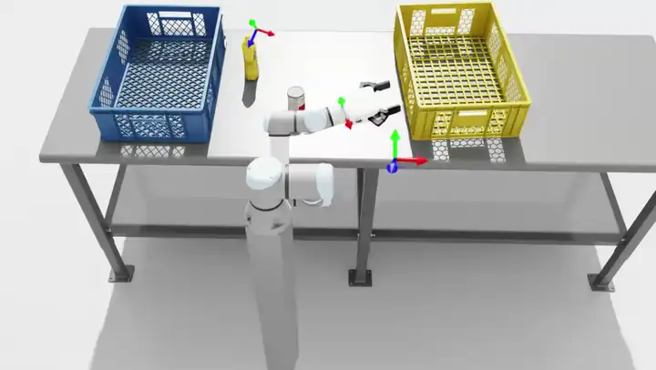
移动控制控制器使用 VR 摇杆和面部按钮输入来移动 prim。水平移动基于 prim 的朝向投影到世界地面平面上，因此无论目标 prim 的局部坐标系方向如何，轴向始终保持正确。

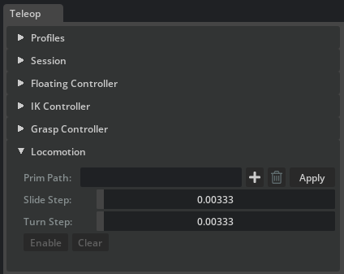
两种驱动模式控制基座移动的方式：
瞬移（运动学）— 每帧写入基座的世界姿态。由于这是 Universal Scene Description (USD) 层级操作，即使后代 prim（手臂、夹爪，无论是刚体还是关节体）仅父子关联到基座而非物理连接，它们也会随之移动。不涉及物理模拟。
速度（物理）— 在动态非运动学刚体基座上命令线速度和角速度，以便 PhysX 积分运动，产生真实的接触和碰撞。只有基座本身移动；附加负载仅在物理连接到基座时才会跟随。普通的
Xform（如 VR 原点标记）或运动学体无法通过速度驱动，将回退到瞬移模式。
默认的 自动 模式为动态刚体目标选择速度模式，否则选择瞬移模式。
支持两种工作流：
机器人基座 — 将 prim 路径设置为机器人基座链接。摇杆输入移动机器人，连接的手臂和夹爪随之移动。切换 携带跟踪空间（左主按钮）可使 VR 原点与机器人同步移动。
VR 原点 — 将 prim 路径设置为内置跟踪空间原点标记（
/Teleop/Markers/TrackingOrigin）。由于运动 prim 就是 VR 原点，因此隐式支持携带功能。此选项适用于没有物理基座的悬浮夹爪。
读取自定义锚点时不会更改其已编写的 xform 操作。因此，仅当自定义锚点已具有可写的 xformOp:translate、xformOp:orient 和 xformOp:scale 操作时，才可使用携带跟踪空间。对于使用矩阵、枢轴或 rotateXYZ 编写的引用，如果需要携带功能，请使用单独的可写 Xform 作为自定义锚点。
控件：
Prim 路径 — 要移动的 prim。点击 Apply 进行验证。
驱动模式 — Auto、Teleport (kinematic) 或 Velocity (physics)。对于动态刚体目标，Auto 解析为 Velocity，否则解析为 Teleport。
滑动步长 — 在全量输入下，每次应用更新时的滑动距离（Teleport 模式）。控制左摇杆平移（前进、后退、横向）和右侧面按钮的垂直运动。
转向步长 — 在全量右摇杆偏航输入下，每次应用更新时的转向角度（Teleport 模式）。
线速度 — 在全量输入下，基座的最大线性速度，单位为米/秒（Velocity 模式）。
角速度 — 在全量右摇杆偏航输入下，基座的最大偏航速率，单位为弧度/秒（Velocity 模式）。
Enable / Disable — 为下一次 Play 启用或禁用运动功能。
Clear — 销毁已配置的状态，同时保留 prim 路径。
在 Play 期间，控制器读取以下 VR 输入：
左摇杆 — 在世界地面平面上进行前后（Y）和左右（X）滑动。
右摇杆 — 左右偏航转向。
右侧面部按钮 —
A（主要）沿世界 Z 轴向下移动，B（次要）沿世界 Z 轴向上移动（Meta 风格控制器布局）。左侧主要面部按钮（在 Meta 风格控制器上为
X）— 切换 携带跟踪空间 模式。激活时，移动操作也会使跟踪空间图元随基座一起移动，包括围绕基座枢轴的旋转。当移动图元是跟踪空间原点时，携带操作是隐式的，切换操作没有额外效果。
录制与回放（Episode Recorder）#
Episode Recorder 窗口（isaacsim.replicator.episode_recorder.ui，从 Tools > Replicator > Episode Recorder 打开）将每个物理步的模拟状态记录到多集 HDF5 文件中，并通过 Kit 时间轴进行回放。它适用于任何舞台。当 TeleopManager 存活时，通过 install_teleop_session_injector 从窗口打开的每个会话都会追加遥操作控制器、瞄准姿态和头部姿态通道。

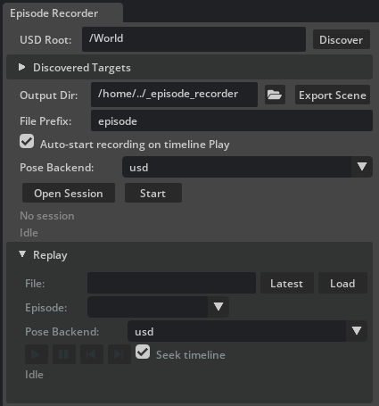
录制会话是一个包含许多集的 HDF5 文件。集在时间轴播放时自动开始，在时间轴停止时自动结束。窗口按钮、VR 录制按钮以及任何脚本调用者都会在此基础上添加手动开始、结束或切换边缘，所有这些操作都驱动同一个底层会话。
目标与输出#
USD Root — 发现辅助工具扫描的 prim 路径。
/World是一个合理的默认值。Discover — 列出根路径下的所有 articulation（通过
ArticulationRootAPI）、rigid body（通过RigidBodyAPI）以及普通 Xform prim。普通 Xform 始终包含在内，因此由运动控制的机器人基座立方体、手动放置的追踪器或 articulation 下的可视化工具尖端都会自动显示，无需额外选择。Discovered Targets（可折叠、可滚动）— 在根路径下找到的 articulation 和 prim。勾选每个需要记录的目标；每个勾选对应 HDF5 文件中的一个组或数据集。
Output Dir — 写入 HDF5 文件的目录。默认为
<cwd>/_episode_recorder；如果不存在则创建。Export Scene（位于 Output Dir 字段旁边）— 将当前 stage 的扁平化 USD 写入
<output_dir>/stage_snapshot.usd，并连同stage_snapshot.sidecar.json一起保存。该快照是场景级别的，因此每个场景只需点击一次：后续的 Open Session 调用会检测该文件，并自动将其基本名称写入 HDF5 的stage_snapshot属性中。File Prefix — 文件名前缀。最终路径为
{prefix}_{timestamp}.hdf5。Auto-start recording on timeline Play — 勾选时（默认），按下 Play 会自动开始新的 episode。取消勾选则仅在按下 Start / End（或 VR 按钮）时进行记录；时间轴可以在不捕获任何 episode 的情况下播放。
姿态后端（录制端）— 选择录制器在每个 tick 批量
XformPrim.get_world_poses()读取时使用的后端。选项：usd（默认；纯 USD 读取）、usdrt（通过IFabricHierarchy使用 Fabric 场景代理）、fabric（直接通过 Fabric 场景代理）。当启用 Fabric 场景代理时，基于 Fabric 的选项是安全的加速方式；当禁用 Fabric 场景代理时，它们会回退到usd并产生一条 carb 警告。这与 Teleop Session > Debug 面板中的 写入后端 不同，后者控制的是 teleop 的写入路径。
会话和片段控制#
打开会话 / 关闭会话 — 单个切换按钮。打开时，录制器创建 HDF5 文件，订阅模拟事件，并在下方显示文件名。会话打开期间，所有配置选项均被锁定。
Start / End — 单个切换按钮，用于在已打开的会话内手动开始或结束一个 episode。仅在会话打开时启用。该按钮也由 VR 左手柄 Y 键驱动（见下文），并且当启用 Auto-start recording on timeline Play 时，也由时间轴 PLAY / STOP 钩子驱动。
Binding badge — 渲染在 Start / End 旁边的小型虚线标签。当有外部输入（例如通过
TeleopManager附加的VRRecordingButton）当前连接到此录制器时，该标签会亮起绿色并列出所有外部输入。工具提示会枚举每个绑定的标签及其分发的命令（start/end/toggle）。当没有活动的外部绑定时，该标签为空。Status label — 按钮下方的颜色编码反馈：
Idle（暗色）。
Session open - N articulation(s), M prim(s)（黄色）。
Recording episode #K（绿色）。
Standby - K episode(s) captured（黄色）。
Session closed (K episode(s))（绿色）。
错误和警告分别以红色和黄色显示。
回放#
Replay 子部分（可折叠，默认处于折叠状态）会将之前录制的任何 HDF5 文件重新播放到 Kit 时间轴中。Replay 与录制互斥：当会话打开时，Replay 控件将被锁定；当附加了 Replay 时，录制控件将被锁定。
传输行使用 Kit 时间轴样式的图标按钮而非文本标签：播放 / 停止、暂停、后退一步和前进。
File — HDF5 会话文件的完整路径。使用 Latest 可自动填入当前 Output Dir 中最新的
{prefix}_*.hdf5。Load — 打开 HDF5 文件，并将每个剧集名称及其帧数填充到 Episode 下拉列表中。下拉列表旁边的信息标签会显示所选剧集的
success=True/False，因此可以一目了然地看到被放弃的拍摄片段。加载后，如果 HDF5 中引用的任何 prim 路径在当前 stage 上无法解析，状态下方会出现一行红色警告 — 请在开始回放之前打开匹配的场景（或导出的stage_snapshot.usd）。Pose Backend（回放端）— 选择回放器用于按层级批量写入姿态的后端。选项与记录端的选项一致（usd / usdrt / fabric）。
usd是推荐的默认值 — 基于祖先顺序的层级拆分加上 USD 写入，可以避免嵌套在移动 xform 下的关节结构出现父级滞后卡顿。usdrt和fabric保留用于对扁平场景进行基准测试，在嵌套层级中可能会出现一帧的父级滞后。在 Load 时应用。Play / Stop 图标 — 驱动
EpisodeReplayer.start_replay。每次 Kit 应用更新都会应用一个记录帧，并将 Kit 时间轴跳转（而非播放）到记录的sim_time，因此任何在 stage 中编写的 USD 动画都会同步播放，而不会步进物理模拟。姿态写入会落在一个匿名的 USD 子层中，因此根 stage 永远不会被修改。停止（或在非循环模式下到达最后一帧）会弹出该子层，使每个 prim 恢复到回放前的姿态；HDF5 会话保持加载状态，因此可以立即开始新的回放。Pause 图标 — 暂停当前帧的回放；最后应用的帧保留在 stage 上。再次按下可从暂停处恢复。Stop 图标仍会弹出匿名子层。
Step Backward / Step Forward 图标 — 应用上一帧或下一帧记录，并自动暂停回放。使用它们逐帧检查录制内容，或在恢复前跳转到特定时刻。
Seek timeline — 勾选时（默认），每个应用的帧还会将 Kit 时间轴跳转到该帧记录的
sim_time，从而使 stage 中编写的 USD 动画与录制保持同步。取消勾选可仅回放记录的 prim 姿态，而不影响时间轴。Progress label — 位于回放状态下方，以
Frame X / N显示当前应用的帧。相同的计数器会以一秒为间隔以及在第一帧和最后一帧时输出到终端。
回放仅涉及纯 USD 和时间轴跳转 — 回放器从不播放时间轴，也从不调用物理引擎。Teleop 控制器（Floating、IK、Grasp、Locomotion）在回放期间保持休眠，从而避免了在停止的模拟上播放时间轴可能触发的 Simulation view object is invalidated 错误。启动 / 停止生命周期会在终端上发出 [EpisodeRecorder][UI] Replay: starting (episode ..., N frames, file=...) 和 Replay: stopped (reason=user | finished | stage_closed)，以及周期性的 Replay: frame X/N 进度行。
要使回放正常工作，HDF5 中记录的每个 prim 路径都必须存在于已加载的 stage 上。Replay 面板使用宽容的重放器（ReplayPolicy(strictness="best_effort")），它会跳过缺失的路径并发出警告，而不是报错。为了确保可复现的设置，请在录制前点击一次 Export Scene；生成的 stage_snapshot.usd 可以在任何机器上打开，以便在回放前复现已创建的 stage。
HDF5 文件布局#
每个会话生成一个 HDF5 文件，其中每个 episode 对应一个 group。数据集按 episode 预分配，并在 end_episode 时修剪为其实际长度。
<file>.hdf5 # one file per open_session()
├── @schema_version, @created_at, manifest/, ... # file-level attrs + manifest
├── @stage_snapshot # optional, set by Export Scene
└── episodes/
├── episode_00000/ # @episode_index, @started_at, @ended_at,
│ │ # @num_frames, @success (optional),
│ │ # @user_metadata (optional, JSON)
│ ├── meta/time/
│ │ ├── sim_time (N,) float64
│ │ ├── physics_step (N,) int64
│ │ └── wall_time (N,) float64
│ ├── state/<name>/ # articulation, xform, or rigid body (UI naming)
│ │ ├── positions (N, L, 3) float32 # articulation: per-link world position
│ │ ├── orientations (N, L, 4) float32 # articulation: per-link wxyz
│ │ ├── position (N, 3) float32 # xform / rigid body
│ │ └── orientation (N, 4) float32 # wxyz
│ └── teleop/ # present when a TeleopManager/session injector is active
│ ├── <side>/{trigger, squeeze, thumbstick_x, thumbstick_y} (N,) float32
│ ├── <side>/{primary_click, secondary_click, thumbstick_click} (N,) uint8
│ ├── <side>/aim_position (N, 3) float32 # record_aim_pose=True
│ ├── <side>/aim_orientation (N, 4) float32 # wxyz
│ └── head/{position, orientation} (N, 3 | 4) float32 # record_head_pose=True
├── episode_00001/ ...
└── episode_00002/ ...
对于 articulations，L 是记录的 link 数量（articulation 根节点加上每个 UsdGeom.Xformable 后代）。link 列表在 Open Session 时冻结，并存储在 manifest 中，以便重放器绑定到相同的 prim 集合。没有 DOF、速度或驱动目标通道：每个夹爪驱动关节都通过其子 link 记录的世界姿态来复现，因此回放打开/关闭的夹爪无需运行任何 teleop 逻辑即可正常工作。
EpisodeReplayer.list_episodes 遍历 episodes/episode_NNNNN groups 以进行逐 episode 回放。
录制数据与回放数据#
录制器每帧捕获两类数据：
世界状态（位于
state/<name>/下，每个记录的 articulation、Xform 或 rigid body 对应一个 HDF5 group）— 每个记录 prim 的世界姿态。对于 articulations，这是逐 link 的姿态数组；对于 rigid bodies 和 Xforms，则是单个根节点姿态。这是重放器应用的唯一数据。遥操作输入通道（位于
teleop/<side>/...下，当记录时存在活跃的TeleopManager会话注入器时存在）— 来自实时、调试或 MCAP 输入的触发器、挤压、摇杆和按钮点击。实时和 MCAP 源还会填充可选的原始瞄准姿态和头部姿态通道。调试标记姿态可通过类型化的TeleopFrame观察者获取，但不会复制到传统的原始姿态记录项中，因此在调试模式下，这些 HDF5 姿态通道包含其无效的零默认值。这些数据集保留用于离线分析和策略学习。EpisodeReplayer不会应用它们，且 Episode Recorder HDF5 文件不是 Isaac Teleop MCAP。
瞄准姿态和头部姿态的捕获由 carb 设置 /persistent/exts/isaacsim.replicator.teleop/record/record_aim_pose 和 .../record_head_pose 控制（两者默认均为 True）。如果希望跳过它们，请在打开会话之前从脚本编辑器（carb.settings.get_settings().set_bool(...)）中切换这些设置。
在重放期间，EpisodeReplayer.apply_frame 通过 XformPrim.set_world_poses 将每个 prim（以及每个关节链 link）的记录世界姿态写入匿名 USD 子层。不步进物理，不写入自由度（DOF），不求解逆运动学（IK），不重新分发触发命令，不消耗 OpenXR 输入。遥操作控制器（Floating、IK、Grasp、Locomotion）保持休眠状态。重放严格来说是 USD 姿态播放。
可选：从 Python 添加相机和属性通道#
对于标准遥操作工作流，请使用上文所述的 Episode Recorder 窗口。其 Discover 操作涵盖了大多数用户所需的世界状态目标：articulations、rigid bodies 和 plain Xforms。仅当 HDF5 会话还需要窗口无法配置的通道（例如相机内参或任意 USD 属性）时，才使用 Python API。这些通道会扩展 HDF5 记录内容；它们不会改变控制器重定向，也与 MCAP 输入捕获无关。
以下辅助函数接受已存在于当前打开 stage 上的 prim 路径，并返回一个未打开的 EpisodeRecorder。它不会创建或修改 stage prim：
# SPDX-FileCopyrightText: Copyright (c) 2026 NVIDIA CORPORATION & AFFILIATES. All rights reserved.
# SPDX-License-Identifier: Apache-2.0
import isaacsim.core.experimental.utils.app as app_utils
app_utils.enable_extension("isaacsim.replicator.teleop")
from isaacsim.replicator.episode_recorder import ( # noqa: E402
AttributeRecordable,
CameraRecordable,
EpisodeRecorder,
)
from isaacsim.replicator.teleop import TeleopManager, build_teleop_recorder # noqa: E402
def build_recorder_with_extra_channels(
output_dir: str,
*,
teleop_manager: TeleopManager,
robot_prim_path: str,
wrist_camera_prim_path: str,
key_light_prim_path: str,
) -> EpisodeRecorder:
"""Build an unopened teleop recorder for prims that already exist on the stage."""
recorder = build_teleop_recorder(
output_dir=output_dir,
teleop_manager=teleop_manager,
articulations={"robot": robot_prim_path},
)
recorder.add(
CameraRecordable(
group="cameras/wrist",
prim_path=wrist_camera_prim_path,
)
)
recorder.add(
AttributeRecordable(
group="env/light_intensity",
prim_path=key_light_prim_path,
attribute_name="inputs:intensity",
)
)
return recorder
build_teleop_recorder 添加机器人世界状态通道以及遥操作控制器、aim-pose 和 head-pose 通道。随后的两个 add 调用演示了可选通道：
CameraRecordable在每个记录帧上捕获相机世界姿态和 USD 内参（焦距、水平和垂直光圈以及裁剪范围）。分辨率在会话清单中仅存储一次。在 HDF5 回放期间，记录的相机轨迹会与其他世界状态一起重新写入，因此附加到该相机的 Replicator 渲染产品会跟随该轨迹。AttributeRecordable每帧捕获一个 USD 属性。示例记录了一个远距离光源的inputs:intensity属性；材质参数和自定义写入属性遵循相同的模式。
在调用 EpisodeRecorder.open_session 之前添加所有可记录项，因为打开会话会冻结 HDF5 清单。脚本调用者随后负责生命周期管理：调用 open_session()，在运行遥操作运动之前调用 start_episode()，在运动之后调用 end_episode()，最后调用 close_session()。保持提供的 TeleopManager 存活直到记录器关闭，以确保其输入通道保持有效。
Episode Recorder 窗口安装了一个时间轴控制器，当启用自动启动时，该控制器将 Play 和 Stop 映射到 episode 边界。build_teleop_recorder() 返回录制器本身，不包含该 UI 控制器，因此独立脚本应使用显式的 start_episode() 和 end_episode() 调用，除非它安装了等效的时间轴或命令总线处理机制。
第三方扩展可以通过使用 register_session_injector 注册会话注入器，向从 UI 窗口打开的每个会话添加通道。这与 install_teleop_session_injector 用于贡献遥操作控制器、瞄准姿态和头部姿态通道的机制相同。
MCAP 遥操作输入回放#
MCAP 输入回放与上述 HDF5 姿态回放是分开的。McapTeleopFrameProvider 读取由 Isaac Teleop 生成的 MCAP 文件，并提供与实时 OpenXR 输入相同的 TeleopFrame 契约。不需要头显、CloudXR 进程和 OpenXR 运行时。
使用 TeleopManager.connect，并将 input_mode="mcap_replay" 和 mcap_path 设置为输入文件。此首个版本是脚本化传输 API，而非 Teleop 窗口回放模式：构造一个管理器，以编程方式附加并配置其控制器，打开匹配的 USD 阶段，并播放 Kit 时间轴。加载配置文件 YAML 仅返回配置文件数据类；它不会将该配置文件应用于独立管理器。在时间轴播放期间，每次 Kit 应用更新都会使 MCAP 源前进一个输入帧，随后管理器执行其正常的坐标转换和控制器更新，以及在配置了标记管理器和实时跟踪时的标记更新。停止时间轴会暂停输入消费。调用 TeleopManager.execute_command 并设置 TeleopCommand.RESET 会关闭 MCAP 文件并从其开头重新打开。
默认情况下，replay 期望 ControllerTracker 映射到 Isaac Teleop 通道基名 controllers，以及 HeadTracker 映射到 head。请在 Isaac Teleop 的 McapRecordingConfig 工作流中创建具有这些映射的文件，或在连接实时 TeleopManager 时传入 mcap_recording_path。除非显式指定 mcap_recording_overwrite=True，否则现有的录制文件将被拒绝。对于具有不同基名的文件，请使用 controller_channel 和 head_channel 构造 McapTeleopFrameProvider，并将其传递给 TeleopManager.connect_provider。底层 MCAP 录制涵盖整个实时连接，包括 Kit 时间轴停止时的时间段；它不会划分为 Episode Recorder 的 episode。
MCAP 不编码 Isaac Sim 时间轴转换。因此，在物理停止时录制的帧在 replay 期间无法自动识别，因为在 replay 期间仅在时间轴播放时消耗输入。当这些非活动间隔很重要时，请修剪或对齐录制内容，或捕获单独的时间轴状态边车文件（sidecar）。
由于物理引擎和 IK 会再次执行，生成的机器人轨迹可能与原始录制内容不同。MCAP 提供程序由调用方控制节奏，目前不提供时间戳节奏控制、跳转、循环或可靠的文件末尾自动检测功能。请显式停止或断开其连接。Episode Recorder 窗口中的 Replay 控件继续接受 HDF5 文件并执行纯 USD 姿态回放；它们不会打开 MCAP 文件。
收集用于重定向测试的实时输入#
MCAP 包含原始的 Isaac Teleop controllers 和 head 通道。它不包含重定向后的关节目标或仿真姿态。在回放期间，trigger 和 squeeze 会再次通过所选的 profile、别名和 grasp 范围；这就是为什么 MCAP 回放能够端到端地测试重定向路径。
在单独的终端中启动 CloudXR，连接头显 Web 客户端，并保持 Kit 时间轴处于停止状态。底层录制涵盖的是实时连接，而非时间轴片段。
如果 Teleop 窗口已拥有实时连接，请将其断开。目前，MCAP 捕获是 Script Editor API 的功能，而不是 Teleop 窗口或 Episode Recorder 中的字段。
打开 Window > Script Editor，粘贴以下代码片段，检查
MCAP_PATH和RECORD_SECONDS，设置RUN_EXAMPLE = True，然后运行它：# SPDX-FileCopyrightText: Copyright (c) 2026 NVIDIA CORPORATION & AFFILIATES. All rights reserved. # SPDX-License-Identifier: Apache-2.0 import asyncio import time from pathlib import Path import isaacsim.core.experimental.utils.app as app_utils app_utils.enable_extension("isaacsim.replicator.teleop") from isaacsim.replicator.teleop import TeleopManager # noqa: E402 # Review the path and duration, then set this to True in the Isaac Sim Script Editor. RUN_EXAMPLE = False MCAP_PATH = Path("/tmp/teleop_retargeting_input.mcap") RECORD_SECONDS = 20.0 async def record_teleop_input_mcap(path: Path, duration_seconds: float) -> None: """Record raw live controller/head input for a fixed duration.""" path = path.expanduser() path.parent.mkdir(parents=True, exist_ok=True) manager = TeleopManager() connected = manager.connect( input_mode="live", mcap_recording_path=str(path), mcap_recording_overwrite=True, ) if not connected: manager.destroy() raise RuntimeError("Live teleop connection failed; check the terminal for CloudXR/OpenXR details") print(f"[TeleopMCAP] Recording {duration_seconds:.1f} seconds to {path}") try: deadline = time.monotonic() + duration_seconds while time.monotonic() < deadline: await app_utils.update_app_async() finally: manager.disconnect() manager.destroy() print(f"[TeleopMCAP] Finished: {path} ({path.stat().st_size} bytes)") if RUN_EXAMPLE: asyncio.ensure_future(record_teleop_input_mcap(MCAP_PATH, RECORD_SECONDS))
在捕获期间，请短暂保持右手柄处于中立位置，将右手 trigger 从 0 扫到 1 再扫回，将右手 squeeze 从 0 扫到 1 再扫回，然后同时按下两者。这有助于在回放期间区分食指、中指和拇指的响应。
等待控制台显示
[TeleopMCAP] Finished。文件由TeleopManager.disconnect完成最终化，消息会报告其字节大小。
通过 Dex3 retargeter 回放#
打开
teleop_scenario_floating_xarm_dex3.usd并保持时间轴停止。不要连接 Teleop 窗口；脚本会创建拥有 MCAP provider 和 grasp controller 的 manager。在 Script Editor 中，粘贴以下代码片段，将
MCAP_PATH设置为录制的文件，设置RUN_EXAMPLE = True，然后运行它：# SPDX-FileCopyrightText: Copyright (c) 2026 NVIDIA CORPORATION & AFFILIATES. All rights reserved. # SPDX-License-Identifier: Apache-2.0 from pathlib import Path import isaacsim.core.experimental.utils.app as app_utils app_utils.enable_extension("isaacsim.replicator.teleop") from isaacsim.replicator.teleop import ( # noqa: E402 GraspController, TeleopCommand, TeleopManager, get_builtin_teleop_profiles_dir, load_grasp_config, load_teleop_profile, scan_teleop_profiles, ) # First open teleop_scenario_floating_xarm_dex3.usd, review this path, and then # set RUN_EXAMPLE to True in the Isaac Sim Script Editor. RUN_EXAMPLE = False MCAP_PATH = Path("/tmp/teleop_retargeting_input.mcap") PROFILE_NAME = "floating_xarm_dex3_retargeted" def start_retargeted_grasp_replay( mcap_path: Path, ) -> tuple[TeleopManager, GraspController]: """Configure the built-in Dex3 retargeting profile and connect MCAP input.""" profiles = dict(scan_teleop_profiles(get_builtin_teleop_profiles_dir())) profile, profile_errors = load_teleop_profile(profiles[PROFILE_NAME]) if profile is None or profile_errors: raise RuntimeError(f"Could not load {PROFILE_NAME}: {profile_errors}") side = profile.grasp.right grasp_config, config_errors = load_grasp_config(side.config_path) if grasp_config is None or config_errors: raise RuntimeError(f"Could not load grasp config: {config_errors}") grasp = GraspController() configured = grasp.configure( side.prim_path, "right", grasp_config, drive_mode=side.drive_mode, retargeter_kind=side.retargeter_kind, joint_aliases=side.joint_aliases, ) if not configured: raise RuntimeError("Dex3 retargeted grasp did not configure; verify that the matching stage is open") grasp.set_side_tracking_enabled("right", True) manager = TeleopManager() manager.set_grasp_controller(grasp) manager.set_grasp_tracking(True) if not manager.connect( on_status_changed=lambda status: print(f"[TeleopMCAP] {status}"), input_mode="mcap_replay", mcap_path=str(mcap_path.expanduser()), ): manager.destroy() raise RuntimeError("MCAP replay connection failed; check the file path and Isaac Teleop installation") return manager, grasp def rewind_retargeted_grasp_replay(manager: TeleopManager) -> None: """Stop the timeline and reopen the MCAP at its first input frame.""" success, message = manager.execute_command(TeleopCommand.RESET) if not success: raise RuntimeError(message) def stop_retargeted_grasp_replay(manager: TeleopManager) -> None: """Stop the timeline, disconnect MCAP input, and release controllers.""" manager.execute_command(TeleopCommand.DISCONNECT) manager.destroy() if RUN_EXAMPLE: mcap_replay_manager, mcap_grasp_controller = start_retargeted_grasp_replay(MCAP_PATH) print("[TeleopMCAP] Connected. Press Play to consume MCAP frames; Stop pauses replay.")
确认控制台报告所有七个 Dex3 关节已映射，并且
Connected (MCAP replay)。按 Play 以在每个 Kit app 更新时消耗一个 MCAP 输入帧。验证右手食指关节是否跟随记录的扳机动作，中指关节是否跟随挤压动作，以及拇指弯曲是否跟随两者中较强的一个。内置的拇指旋转目标保持固定，如上所述。
按 Stop 暂停且不消耗帧。调用
rewind_retargeted_grasp_replay(mcap_replay_manager)以从第一帧重新打开 MCAP，然后按 Play 进行另一次回放。完成后调用stop_retargeted_grasp_replay(mcap_replay_manager)。
MCAP 回放需要 Isaac Teleop Python 包，因为它提供了 DeviceIO 和 ReplaySession。它不需要运行 CloudXR 进程、OpenXR 运行时或头显。对于 CI，请使用已提交的 fixture MCAP 或现有的合成控制器测试；实时采集本身仍然是一个硬件步骤。
Teleop 配置文件#
Teleop 配置文件是一个单独的 YAML 文件，用于捕获 Teleop 窗口中每个面板的完整状态。使用 Teleop 窗口顶部的 Profiles 面板来保存、加载和删除配置文件。内置配置文件随扩展一起提供，位于 source/extensions/isaacsim.replicator.teleop/data/teleop_profiles/ 下；将 Dir 字段指向自定义文件夹，以便与内置配置文件一起管理您自己的配置文件。
加载时，配置文件会按顺序应用每个部分：首先是会话全局设置，然后是各个控制器面板。如果当前阶段中存在引用的 prim，则控制器将解析并准备好立即 Enable。如果阶段不匹配（不同的机器人或缺少 prim），UI 字段仍会被填充，并且未解析的路径会在状态栏中报告。
内置配置文件#
该扩展内置了六个配置文件，涵盖浮动与 IK 控制、触发与重定向抓取，以及传送或速度移动：
配置文件 |
匹配阶段 |
配置 |
|---|---|---|
|
|
单臂浮动 xArm 夹爪（右侧）；基于 VR 原点的移动。 |
|
|
双臂浮动夹爪（左侧 xArm + 右侧 Dex3）；基于 VR 原点的移动。 |
|
|
相同的浮动设置；右侧 Dex3 使用 TriHand 触发/挤压重定向。 |
|
|
单臂 UR3e 机械臂配 xArm 夹爪（右侧）；基于机器人基座的移动。 |
|
|
双臂 UR3e 机械臂（左侧 xArm 夹爪 + 右侧 Dex3）；基于机器人基座的移动。 |
|
|
相同的双臂 IK 设置；动态 |
下文将详细介绍主要的双臂浮动和 IK 配置文件；它们的重定向和速度变体仅更改上述的抓取或移动部分。
双臂浮动夹爪（VR 原点移动）#
floating_xarm_dex3.yaml 配置了双浮动夹爪设置。Floating Controller 将每个夹爪作为自由刚体驱动，而 Locomotion 以 VR 原点标记为目标，使得摇杆输入可以重新定位整个 VR 工作区。
Session — 在配置任何控制器之前适用的全局设置：
session:
coordinate_system: isaac_sim # Z-up coordinate conversion
tracking_space_enabled: false
tracking_space_path: '' # empty = built-in origin marker
marker_scale: 0.05
anchor_x: 0.0
anchor_y: 0.0
anchor_z: 0.0
anchor_rotation_mode: fixed
anchor_smoothing: 1.0
anchor_fixed_height: true
Floating — 具有 PD 增益和旋转偏移的每侧刚体控制器。两侧均已启用，分别指向不同的夹爪根 prim：
floating:
left:
enabled: true
settings:
prim_path: /World/teleop_xarm_dex3/.../xarm_gripper_rigid_root
pos_kp: 20.0
pos_kd: 0.5
orient_kp: 20.0
orient_kd: 0.2
target_rot_x_deg: 180
target_rot_y_deg: 0
target_rot_z_deg: 90
right:
enabled: true
settings:
prim_path: /World/teleop_xarm_dex3/.../dex3_1_r_rigid_root
pos_kp: 20.0
pos_kd: 0.5
orient_kp: 20.0
orient_kd: 0.2
target_rot_x_deg: -90
target_rot_y_deg: 0
target_rot_z_deg: 90
IK — 两侧均未启用，因为夹爪是浮动刚体而非关节体。该部分仍保留默认值，以便加载配置文件时重置任何先前的 IK 配置。
Grasp — 将每一侧映射到一个夹爪关节体和一个内置抓取配置。builtin:// 路径解析为随扩展程序一起提供的 YAML 文件：
grasp:
left:
enabled: true
prim_path: /World/teleop_xarm_dex3/.../xarm_gripper
config_path: builtin://xarm_grasp
right:
enabled: true
prim_path: /World/teleop_xarm_dex3/.../dex3_1_r
config_path: builtin://dex3_grasp
Locomotion — 驱动内置跟踪空间原点，使摇杆输入能够移动整个遥操作工作区（VR 原点工作流）：
locomotion:
enabled: true
settings:
prim_path: /Teleop/Markers/TrackingOrigin
linear_step: 0.003333333333333333
angular_step: 0.003333333333333333
双臂 IK（机器人基座移动）#
ik_dual_ur3_xarm_dex3.yaml 配置了一个双臂 UR3e 设置，其中每条手臂由 PINK IK 求解器驱动。Locomotion 针对机器人的根体（root prim），使摇杆输入能够移动整个机器人基座。
IK — 两侧均启用 PINK 求解器。每一侧指向双臂组件中的不同 UR3e 手臂。ee_rot_* 偏移量使每个末端执行器的局部坐标系与 VR 控制器的指向方向对齐。PINK 求解器不使用雅可比矩阵求逆方法；对于基于位置（Position-based）和基于速度（Velocity-based）的求解器，请在该侧的设置中添加 method: damped-least-squares | pseudoinverse | transpose | singular-value-decomposition。
ik:
left:
enabled: true
settings:
robot_path: /World/teleop_dual_ur3_xarm_dex3/dual_arm/left_arm_ur3e_xarm/ur3e
ee_link: wrist_3_link
solver: pink
gain: 5.0
vr_target_filter: 0.0
max_joint_step: 0.0
pink_qp_solver: osqp
pink_task_gain: 0.5
pink_posture_cost: 0.001
pink_lm_damping: 1.0
ee_rot_x_deg: 180
ee_rot_y_deg: 0
ee_rot_z_deg: 90
right:
enabled: true
settings:
robot_path: /World/teleop_dual_ur3_xarm_dex3/dual_arm/right_arm_ur3e_dex3/ur3e
ee_link: wrist_3_link
solver: pink
gain: 5.0
vr_target_filter: 0.0
max_joint_step: 0.0
pink_qp_solver: daqp
pink_task_gain: 0.5
pink_posture_cost: 0.001
pink_lm_damping: 1.0
ee_rot_x_deg: 180
ee_rot_y_deg: 0
ee_rot_z_deg: -180
Floating — 禁用，因为手臂是由 IK 控制的关节体。
Grasp — 与浮动配置相同的夹爪映射，每一侧指向对应的夹爪关节体。
Locomotion — 驱动机器人根体，使摇杆输入能够整体移动双臂组件（机器人基座工作流）。可以切换 Carry Tracking Space 以让 VR 原点随机器人一起移动：
locomotion:
enabled: true
settings:
prim_path: /World/teleop_dual_ur3_xarm_dex3
linear_step: 0.003333333333333333
angular_step: 0.003333333333333333
内置场景阶段#
每个内置配置文件都与 Isaac Sim 资产服务器上的一个匹配阶段相对应。在 Kit 时间轴上打开该阶段，从 Profiles 面板加载配置文件，所有控制器将立即解析并准备好 Enable。
所有四个场景阶段都位于资产服务器上的同一路径下：
https://omniverse-content-production.s3-us-west-2.amazonaws.com
/Assets/Isaac/6.1/Isaac/Samples/Replicator/Teleop/
场景 |
阶段文件名 |
|---|---|
浮动，单臂（右侧 xArm） |
|
浮动，双臂（左侧 xArm + 右侧 Dex3） |
|
IK，单臂（xArm 安装在 UR3e 上，右侧） |
|
IK，双臂（左侧 xArm + 右侧 Dex3 安装在双 UR3e 上） |
|
工作流程演练#
本节将快速入门扩展为完整的工作流程：从配置文件进行配置、在 VR 或调试模式下连接、操作每个控制器，以及录制和回放一个 episode。为了捕获数据，请在按下 Play 之前打开一个 Episode Recorder 会话。
使用内置配置文件进行配置#
打开 Tools > Replicator > Teleop。
打开上述内置场景阶段中的一个。
在 Profiles 面板中，Dir 字段默认指向内置配置文件目录。从下拉菜单中选择与当前阶段匹配的配置文件，然后单击 Load。Floating Controller、IK Controller、Grasp Controller 和 Locomotion 面板将根据已加载的阶段进行配置，其 Enable 按钮变为可用状态。
单击 Validate 以确认状态栏显示
0 error(s), 0 warning(s)。未解析的 prim 路径将在控制台中列出。
若要为自定义机器人手动配置控制器，请按照 UI 窗口概览 中的说明逐一配置每个面板。每个控制器的生命周期相同：输入 prim 路径，单击 Apply，根据需要调整参数，然后单击 Enable。
连接 VR#
确认 CloudXR 正在单独的终端中运行（
python -m isaacteleop.cloudxr --accept-eula）。配对接戴式设备的 Web 客户端，然后单击 Connect。状态变为绿色（Connected - markers active），并且在
/Teleop/Markers/TrackingOrigin下出现四个帧标记。移动 VR 控制器。Left 和 Right 标记将实时跟踪。
如果 Connect 失败，请检查终端中的 CloudXR 提示信息，必要时重启 CloudXR 终端，然后重试。
不使用 VR 进行操作（调试模式）#
在没有头显可用、迭代调优或运行无头模式时使用调试模式。调试模式与 VR 模式互斥——在启用调试模式前请断开 VR 连接，并在单击 Connect 前取消勾选 Debug Mode。
展开 Session > Debug 并勾选 Debug Mode。视口中会出现帧标记，Connect 按钮将被禁用，下方的模拟输入控件将变为可用。
在视口中拖动 Left、Right 或 Head 标记以设置其姿态；拖动 TrackingOrigin 父级可同时移动所有四个标记。标记层级结构反映了真实的 VR 跟踪空间。
操作机器人#
在 Kit 时间轴上按下 Play。每个启用的控制器都会过渡到 Active 状态。输入与控制器之间的映射关系如下：
控制器 |
VR 输入 |
调试输入 |
|---|---|---|
浮动 / IK |
移动控制器；刚体或末端执行器将跟踪该姿态。 |
拖动 Left 或 Right 帧标记。 |
抓取 |
挤压扳机（0 = 打开，1 = 闭合）。 |
移动 L Grasp 或 R Grasp 滑块。 |
Locomotion（滑动） |
推动左侧拇指摇杆（向前、向后、横向）；右侧面部按钮 A / B 控制 Z 轴向下 / 向上。 |
移动 Slide X / Slide Y 滑块；按住 Up / Down。 |
Locomotion（转向） |
向左或向右推动右手柄。 |
移动 Turn（转向）滑块。 |
Locomotion（转向）（携带跟踪空间） |
按左侧主要面按钮（在 Meta 设备上为 X）进行切换。 |
点击 Carry Origin（携带原点）切换开关。 |
在 Play（播放）期间，增益、旋转偏移和步进滑块可实时编辑。完成后，通过 Profiles > Save（配置文件 > 保存）将调整后的状态保存到配置文件中。按 Stop（停止）以停用所有控制器。
若仅运行一侧，请配置所需的一侧，并在另一侧点击 Clear（清除）；被清除的一侧将忽略其 VR 控制器 / 标记。
记录一个 Episode（片段）#
Episode Recorder（片段记录器）窗口捕获仿真状态以及（当 TeleopManager 处于活动状态时）遥操作输入通道。有关完整的 UI 参考，请参阅 Record and replay（记录与回放）。
打开 Tools（工具） > Replicator > Episode Recorder（片段记录器）。保持 Teleop（遥操作）窗口打开，以确保会话注入器保持活动状态。
将 USD Root（USD 根目录）设置为
/World，点击 Discover（发现），并勾选要记录的目标（机器人、任何被跟踪的 Xforms）。可选 — 点击 Export Scene（导出场景）一次，将
stage_snapshot.usd写入 HDF5 输出文件旁边。在不同机器上回放时，可以使用此快照作为可移植的场景。点击 Open Session（打开会话）。配置控件将被锁定，文件名显示在按钮下方。
在时间轴上按下 Play（播放）。如果勾选了 Auto-start recording on timeline Play（时间轴播放时自动开始录制，默认选项），状态将变为绿色并显示
Recording episode #1。操作机器人。按下 Stop（停止）以结束该片段。重复此步骤以录制更多片段。若要在 VR 中手动切换录制状态，请按 Meta Quest 控制器左侧的 Y 按钮。每次上升沿都会开始或结束一个片段。
完成后，点击 Close Session（关闭会话）。
回放 HDF5 片段#
在 Episode Recorder（片段录制器）窗口中展开 Replay（回放）子部分。
点击 Latest（最新）以在 Output Dir（输出目录）中填入最近的 HDF5 文件，然后点击 Load（加载）。Episode（片段）下拉列表会列出每个片段及其帧数和
success标志。选择一个片段，然后点击传输行中的播放图标。Kit 时间轴会跳转到每一帧记录的
sim_time。每个 prim 都会沿其记录的轨迹移动；遥操作控制器保持休眠状态。使用暂停和后退/前进图标进行拖动浏览。取消勾选 Seek timeline（跳转时间轴）以保持 Kit 时间轴不变（当舞台没有已编写的动画时很有用）。
点击停止图标以将舞台恢复到回放前的姿态。HDF5 文件保持加载状态，以便立即开始新的回放。
要使回放正常工作，HDF5 中记录的每个 prim 路径都必须存在于已加载的舞台中。如果原始舞台不可用，请打开由 Export Scene（导出场景）写入的 stage_snapshot.usd。
若要从 Isaac Teleop MCAP 重新运行控制器堆栈，而不是预览录制的世界姿态，请使用脚本化的 MCAP 输入回放 工作流。Episode Recorder 的 Replay 面板不会打开 MCAP 文件。
从录制的情节生成合成数据#
录制与回放 中介绍的 HDF5 UI 回放是由 Kit 时间线驱动的快速视觉预览。对于离线合成数据生成，请逐帧驱动 EpisodeReplayer，并在选定用于捕获的帧上调用 rep.orchestrator.step_async。这将录制时间与渲染时间解耦，因此即使运行高开销的写入器或 DLSS 模式，也不会拖慢遥操作或导致时间漂移。
先决条件#
由 Episode Recorder 窗口（或任何
EpisodeRecorder子类）生成的 HDF5 会话。用于回放的 USD 舞台。HDF5 中的每个 prim 路径都必须能在此舞台上解析。将
STAGE_URL指向原始场景的 assets-server 路径，或指向导出的快照——在 Episode Recorder 窗口中单击 Export Scene，或从脚本中调用export_stage_snapshot，以在 HDF5 旁边生成stage_snapshot.usd。正在运行 Isaac Sim。回放不需要 VR 或 CloudXR 连接。
脚本执行的操作#
脚本打开 STAGE_URL（通过 get_assets_root_path 解析），解析 CAMERA_PATHS 中列出的相机（如果未解析到任何相机，则回退到默认相机），将 BasicWriter（RGB PNG）附加到相机渲染产品，并回放每个录制的帧。它仅在最多 NUM_CAPTURES 个均匀间隔的帧上调用 rep.orchestrator.step（或在 Script Editor 变体中调用 step_async）。输出位于当前工作目录旁边的 _out_sdg_teleop_replay/ 下。
在运行以下任一变体之前，请编辑脚本顶部的 HDF5_PATH 和 STAGE_URL，使其指向您录制的会话及其匹配的 USD stage。
该示例可以使用以下终端命令作为独立应用程序运行（在 Windows 上使用 python.bat 而不是 python.sh）：
./python.sh standalone_examples/api/isaacsim.replicator.teleop/sdg_teleop_replay.py
Full Standalone Script
import os
from isaacsim import SimulationApp
simulation_app = SimulationApp(launch_config={"headless": False})
import carb.settings
import omni.kit.app
import omni.replicator.core as rep
import omni.usd
from isaacsim.core.utils.extensions import enable_extension
# Enable the teleop extension before importing modules it owns and before resolving its data path.
# It also transitively pulls in `isaacsim.replicator.episode_recorder`, which is not part of the base kit.
enable_extension("isaacsim.replicator.teleop")
from isaacsim.replicator.episode_recorder import EpisodeReplayer
from isaacsim.storage.native import get_assets_root_path
from pxr import UsdGeom
# Resolve the bundled golden HDF5 episode shipped with the isaacsim.replicator.teleop extension tests.
_TELEOP_EXT_PATH = (
omni.kit.app.get_app().get_extension_manager().get_extension_path_by_module("isaacsim.replicator.teleop")
)
# Path to the USD stage to replay against; every prim path in the HDF5 must resolve on this stage.
STAGE_URL = "/Isaac/Samples/Replicator/Teleop/teleop_scenario_floating_xarm_dex3.usd"
HDF5_PATH = os.path.join(
_TELEOP_EXT_PATH,
"isaacsim",
"replicator",
"teleop",
"tests",
"data",
"_episode_recorder",
"episode_floating_xarm_dex3.hdf5",
)
CAMERA_PATHS = [
"/World/teleop_xarm_dex3/gripper_origin_xform/xarm_gripper_root_xform/xarm_gripper/xarm_gripper_base_link/xarm_view_cam",
"/World/teleop_xarm_dex3/gripper_origin_xform/dex3_1_r_root_xform/dex3_1_r/right_hand_palm_link/dex3_view_cam",
]
EPISODE_INDEX = 0
RESOLUTION = (512, 512)
NUM_CAPTURES = 10 # Number of frames to capture, evenly distributed across the episode
def run_example() -> None:
"""Replay a recorded teleoperation episode and capture SDG frames."""
print("[TeleopReplay] Starting replay example")
if not HDF5_PATH:
print("[TeleopReplay] HDF5 path not provided, exiting")
return
if not os.path.isfile(HDF5_PATH):
print(f"[TeleopReplay] HDF5 session file does not exist: '{HDF5_PATH}', exiting")
return
print(f"[TeleopReplay] HDF5 session: {HDF5_PATH}")
# Load the authored USD stage so every prim path in the HDF5 resolves.
assets_root_path = get_assets_root_path()
if assets_root_path is None:
print("[TeleopReplay] Could not find Isaac Sim assets folder, exiting")
return
stage_path = assets_root_path + STAGE_URL
print(f"[TeleopReplay] Opening stage: {stage_path}")
omni.usd.get_context().open_stage(stage_path)
print("[TeleopReplay] Stage opened")
# Drive writers manually via rep.orchestrator.step, not via timeline play.
rep.orchestrator.set_capture_on_play(False)
# Set DLSS to Quality mode (2) for best SDG results (Options: 0 (Performance), 1 (Balanced), 2 (Quality), 3 (Auto)
carb.settings.get_settings().set("rtx/post/dlss/execMode", 2)
# Resolve CAMERA_PATHS to UsdGeom.Camera prims; fall back to a default (5,5,5)
# camera looking at the origin when CAMERA_PATHS is empty or none resolve.
stage = omni.usd.get_context().get_stage()
valid_camera_paths: list[str] = []
for path in CAMERA_PATHS:
prim = stage.GetPrimAtPath(path) if path else None
if prim is None or not prim.IsValid():
print(f"[TeleopReplay] Camera path '{path}' not found in stage, skipping")
continue
if not prim.IsA(UsdGeom.Camera):
print(f"[TeleopReplay] Prim at '{path}' is not a UsdGeom.Camera (type={prim.GetTypeName()}), skipping")
continue
valid_camera_paths.append(path)
render_products = []
if valid_camera_paths:
print(f"[TeleopReplay] Using {len(valid_camera_paths)} scene camera(s): {valid_camera_paths}")
for i, cam_path in enumerate(valid_camera_paths):
render_products.append(rep.create.render_product(cam_path, RESOLUTION, name=f"ReplayRP_{i}"))
else:
if CAMERA_PATHS:
print(
"[TeleopReplay] No valid scene cameras found in CAMERA_PATHS, falling back to default (5,5,5) camera."
)
cam = rep.functional.create.camera(position=(5, 5, 5), look_at=(0, 0, 0), name="ReplayCamera")
render_products.append(rep.create.render_product(cam, RESOLUTION, name="ReplayRP"))
print(f"[TeleopReplay] Created {len(render_products)} render product(s) at resolution {RESOLUTION}")
# BasicWriter for RGB PNGs writing straight into the output directory.
out_dir = os.path.join(os.getcwd(), "_out_sdg_teleop_replay")
print(f"[TeleopReplay] Output directory: {out_dir}")
basic_backend = rep.backends.get("DiskBackend")
basic_backend.initialize(output_dir=out_dir)
basic_writer = rep.writers.get("BasicWriter")
basic_writer.initialize(backend=basic_backend, rgb=True)
basic_writer.attach(render_products)
print(f"[TeleopReplay] BasicWriter attached -> {out_dir}")
# Prepare the episode and capture one RGB frame per recorded frame.
print(f"[TeleopReplay] Preparing episode {EPISODE_INDEX}")
try:
replayer = EpisodeReplayer(HDF5_PATH)
# Start replay with seek_timeline=True to match recorded sim_time, then pause to manually step and capture.
replayer.start_replay(episode=EPISODE_INDEX, seek_timeline=True)
replayer.pause_replay()
except Exception as exc:
print(f"[TeleopReplay] Could not start replay for episode {EPISODE_INDEX} from '{HDF5_PATH}': {exc}, exiting")
return
num_frames = replayer.num_frames(EPISODE_INDEX)
if num_frames <= 0:
print(f"[TeleopReplay] Episode {EPISODE_INDEX} has no frames in '{HDF5_PATH}', exiting")
replayer.close()
return
# Replay every frame so the user can watch the full episode, but only trigger a writer capture
# on NUM_CAPTURES indices evenly distributed across the episode (e.g. every 10% for NUM_CAPTURES=10).
num_captures = min(NUM_CAPTURES, num_frames)
capture_set = {(i * num_frames) // num_captures for i in range(num_captures)}
print(f"[TeleopReplay] Replaying episode {EPISODE_INDEX}: capturing {len(capture_set)} of {num_frames} frames")
capture_count = 0
for f in range(num_frames):
if f > 0:
replayer.step_frame(1)
if f in capture_set:
rep.orchestrator.step(delta_time=0.0, pause_timeline=False)
capture_count += 1
print(f"[TeleopReplay] Captured {capture_count}/{len(capture_set)} (frame {f + 1}/{num_frames})")
else:
simulation_app.update()
# Wait for the data to be written to disk and clean up resources.
print("[TeleopReplay] Waiting for writers to flush...")
rep.orchestrator.wait_until_complete()
basic_writer.detach()
for rp in render_products:
rp.destroy()
replayer.close()
print(f"[TeleopReplay] Done. Output: {out_dir}")
# Run the example
run_example()
将以下代码片段粘贴到 Script Editor（Window > Script Editor）中。
Full Script Editor Script
import asyncio
import os
import carb.settings
import isaacsim.core.experimental.utils.app as app_utils
import isaacsim.core.experimental.utils.stage as stage_utils
import omni.replicator.core as rep
# Enable the teleop extension before importing modules it owns and before resolving its data path.
# It also transitively pulls in `isaacsim.replicator.episode_recorder`, which is not part of the base kit.
app_utils.enable_extension("isaacsim.replicator.teleop")
from isaacsim.replicator.episode_recorder import EpisodeReplayer # noqa: E402
from isaacsim.storage.native import get_assets_root_path_async # noqa: E402
from pxr import UsdGeom # noqa: E402
# Resolve the bundled golden HDF5 episode shipped with the isaacsim.replicator.teleop extension tests.
_TELEOP_EXT_PATH = app_utils.get_extension_path("isaacsim.replicator.teleop")
# Path to the USD stage to replay against; every prim path in the HDF5 must resolve on this stage.
STAGE_URL = "/Isaac/Samples/Replicator/Teleop/teleop_scenario_floating_xarm_dex3.usd"
HDF5_PATH = os.path.join(
_TELEOP_EXT_PATH,
"isaacsim",
"replicator",
"teleop",
"tests",
"data",
"_episode_recorder",
"episode_floating_xarm_dex3.hdf5",
)
CAMERA_PATHS = [
"/World/teleop_xarm_dex3/gripper_origin_xform/xarm_gripper_root_xform/xarm_gripper/xarm_gripper_base_link/xarm_view_cam",
"/World/teleop_xarm_dex3/gripper_origin_xform/dex3_1_r_root_xform/dex3_1_r/right_hand_palm_link/dex3_view_cam",
]
EPISODE_INDEX = 0
RESOLUTION = (512, 512)
NUM_CAPTURES = 10 # Number of frames to capture, evenly distributed across the episode
async def run_example_async():
print("[TeleopReplay] Starting replay example")
if not HDF5_PATH:
print("[TeleopReplay] HDF5 path not provided, exiting")
return
if not os.path.isfile(HDF5_PATH):
print(f"[TeleopReplay] HDF5 session file does not exist: '{HDF5_PATH}', exiting")
return
print(f"[TeleopReplay] HDF5 session: {HDF5_PATH}")
# Load the authored USD stage so every prim path in the HDF5 resolves.
assets_root_path = await get_assets_root_path_async()
if assets_root_path is None:
print("[TeleopReplay] Could not find Isaac Sim assets folder, exiting")
return
stage_path = assets_root_path + STAGE_URL
print(f"[TeleopReplay] Opening stage: {stage_path}")
opened, stage = await stage_utils.open_stage_async(stage_path)
if not opened or stage is None:
print(f"[TeleopReplay] Could not open stage: {stage_path}")
return
print("[TeleopReplay] Stage opened")
# Drive writers manually via rep.orchestrator.step, not via timeline play.
rep.orchestrator.set_capture_on_play(False)
# Set DLSS to Quality mode (2) for best SDG results (Options: 0 (Performance), 1 (Balanced), 2 (Quality), 3 (Auto)
carb.settings.get_settings().set("rtx/post/dlss/execMode", 2)
# Create a default camera if no valid cameras are found in CAMERA_PATHS
valid_camera_paths: list[str] = []
for path in CAMERA_PATHS:
prim = stage.GetPrimAtPath(path) if path else None
if prim is None or not prim.IsValid():
print(f"[TeleopReplay] Camera path '{path}' not found in stage, skipping")
continue
if not prim.IsA(UsdGeom.Camera):
print(f"[TeleopReplay] Prim at '{path}' is not a UsdGeom.Camera (type={prim.GetTypeName()}), skipping")
continue
valid_camera_paths.append(path)
render_products = []
if valid_camera_paths:
print(f"[TeleopReplay] Using {len(valid_camera_paths)} scene camera(s): {valid_camera_paths}")
for i, cam_path in enumerate(valid_camera_paths):
render_products.append(rep.create.render_product(cam_path, RESOLUTION, name=f"ReplayRP_{i}"))
else:
if CAMERA_PATHS:
print(
"[TeleopReplay] No valid scene cameras found in CAMERA_PATHS, falling back to default (5,5,5) camera."
)
cam = rep.functional.create.camera(position=(5, 5, 5), look_at=(0, 0, 0), name="ReplayCamera")
render_products.append(rep.create.render_product(cam, RESOLUTION, name="ReplayRP"))
print(f"[TeleopReplay] Created {len(render_products)} render product(s) at resolution {RESOLUTION}")
# BasicWriter for RGB PNGs writing straight into the output directory.
out_dir = os.path.join(os.getcwd(), "_out_sdg_teleop_replay")
print(f"[TeleopReplay] Output directory: {out_dir}")
basic_backend = rep.backends.get("DiskBackend")
basic_backend.initialize(output_dir=out_dir)
basic_writer = rep.writers.get("BasicWriter")
basic_writer.initialize(backend=basic_backend, rgb=True)
basic_writer.attach(render_products)
print(f"[TeleopReplay] BasicWriter attached -> {out_dir}")
# Prepare the episode and capture one RGB frame per recorded frame.
print(f"[TeleopReplay] Preparing episode {EPISODE_INDEX}")
try:
replayer = EpisodeReplayer(HDF5_PATH)
# Start replay with seek_timeline=True to match recorded sim_time, then pause to manually step and capture.
replayer.start_replay(episode=EPISODE_INDEX, seek_timeline=True)
replayer.pause_replay()
except Exception as exc:
print(f"[TeleopReplay] Could not start replay for episode {EPISODE_INDEX} from '{HDF5_PATH}': {exc}, exiting")
return
num_frames = replayer.num_frames(EPISODE_INDEX)
if num_frames <= 0:
print(f"[TeleopReplay] Episode {EPISODE_INDEX} has no frames in '{HDF5_PATH}', exiting")
replayer.close()
return
# Replay every frame so the user can watch the full episode, but only trigger a writer capture
# on NUM_CAPTURES indices evenly distributed across the episode (e.g. every 10% for NUM_CAPTURES=10).
num_captures = min(NUM_CAPTURES, num_frames)
capture_set = {(i * num_frames) // num_captures for i in range(num_captures)}
print(f"[TeleopReplay] Replaying episode {EPISODE_INDEX}: capturing {len(capture_set)} of {num_frames} frames")
capture_count = 0
for f in range(num_frames):
if f > 0:
replayer.step_frame(1)
if f in capture_set:
await rep.orchestrator.step_async(delta_time=0.0, pause_timeline=False)
capture_count += 1
print(f"[TeleopReplay] Captured {capture_count}/{len(capture_set)} (frame {f + 1}/{num_frames})")
else:
await app_utils.update_app_async()
# Wait for the data to be written to disk and clean up resources.
print("[TeleopReplay] Waiting for writers to flush...")
await rep.orchestrator.wait_until_complete_async()
basic_writer.detach()
for rp in render_products:
rp.destroy()
replayer.close()
print(f"[TeleopReplay] Done. Output: {out_dir}")
# Run the example
asyncio.ensure_future(run_example_async())
通过替换或添加 Replicator 写入器（深度、语义分割、实例分割、法线、运动矢量、Cosmos 视频等），或在 step_frame 和 rep.orchestrator.step 之间插入随机化器以针对每条记录的轨迹生成场景变体，从而将脚本适配到您的流水线中。